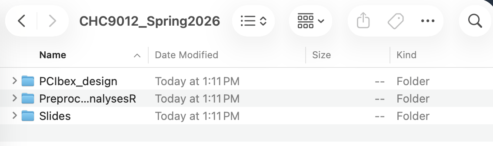
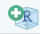
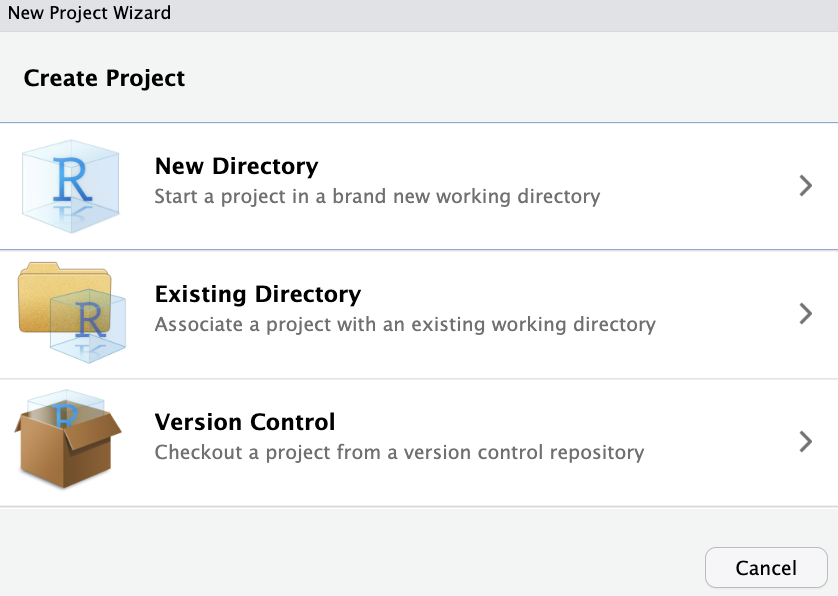
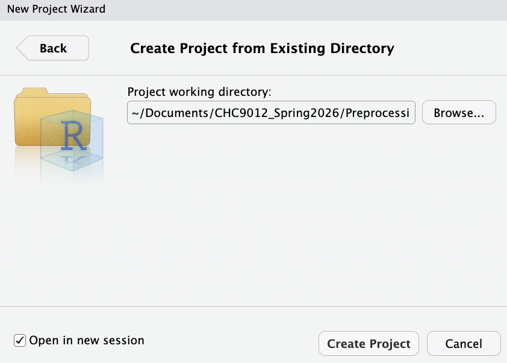
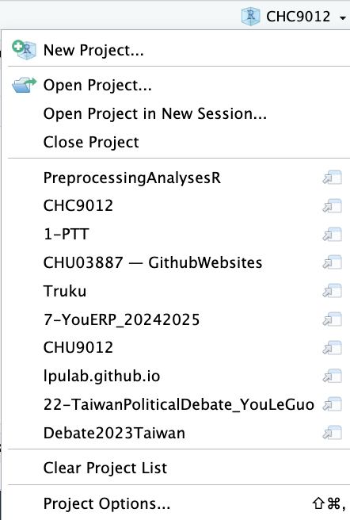
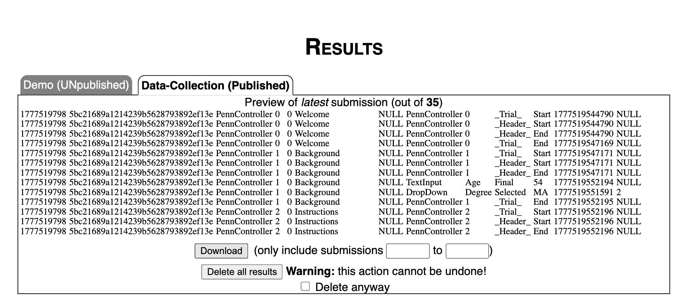

Week 11 - Preparation: Computer set-up and data imporation
CHC9012 | National Taiwan Normal University
Overview
This week, we will have a tutorial on how to prepare your computer for further analyses.
Prepare your computer:
- Projects: How to set-up a project in RStudio?
- Advanced scripts: How to use Markdown documents to share better scripts?
- Data importation: Where to find your PCIbex results file, and how to import it to RStudio?
A brief summary of the essential elements:
read.pcibex(...): Self-built function to import PCIbex results froms.csvfile.head(...): Used to have a look of the first N rows of the dataset.str(...): Used to look at the structure of the dataset.summary(...): Used to summarize the whole dataset.view(...): Used to open the dataset.
Please complete the following tasks before our next meeting:
No assignment for next week! Please carefully review the content of these past two weeks, and finalize the data collection of your own project.
💻 Part 1: Prepare your computer: R projects
The most terrifying part when working with experimental data is that by the end of your study, you will have many files in your computer. It is very easy to be messy, to mix files from different steps, and even to have scripts and files for which we have no idea what they are. Therefore, we need to prepare our computer for each study beforehand.
- Please find you
Documents(or文件) folder. - Once you found it, please create a folder for this class (you can call it
CHC9012_Spring2025, for example) - Within this folder, please create subfolders, such as:
Slides: Where you can store the slides from this classPCIbex_design: Where you can store your script from PCIbex, files containing the materials, etc.PreprocessingAnalysesR: Where you will store the datasets and scripts we are going to use in Part 3.
In the end, your folder will look like this:

Generally, it is better not to use any space when naming folders and files!
- There a small blue icon on the top-left side of RStudio. Please click on it.

- Then, click on “Existing Directory”.

- In the next window, click on “Browse…”, and look for the folder called
PreprocessingAnalysesRthat we just created. Please checkOpen in a new session, and on “Create Project”.

It will open a new and clean RStudio window. At the same time, it will set the PreprocessingAnalysesR as the working directory by default.
Another advantage is that you can have one RStudio window per project, and switch between them without worrying about the working directory of trying to find the right files! You can have a list of your several projects on the top-right corner of RStudio. Here is mine for example:

📊 Part 2: Better and reproducible scripts with R Markdown
Standard R Scripts only save your code. R Markdown files are an incredible upgrade. They allow you to combine your titles, your narrative text, your R code, and your generated plots into one single, shareable document (like a PDF, Word, or HTML file). This is the gold standard for Open Science!
- To start, click “New File” > “R Markdown…”

- RStudio will prompt you for a Title and Author. Once created, you will see a document with a YAML Header at the top between dashed lines
---. This header controls the settings for your final document.

Writing text and code
- In an R Markdown file, anything you type normally becomes standard text. To actually write R code, you must insert a Code Chunk. Click the “Insert” button at the top of the script and select “R”. A grey box will appear.

The symbol {r} indicates that the code in the grey area is in R language. Hashtags # symbols followed by the | bar indicate settings for the block. Otherwise, they are just comments in R as usual.
- You can run these individual chunks using the green Play Button in the corner of the grey box.

📊 Part 3: Download your PCIbex results and import them into RStudio
For the rest of this class, I will show how to preprocess data based on this experiment. You can have a look at it, and its associated code.
Try the experiment
PennController.ResetPrefix(null);
// Optional: Preload any images or CSS here
// PreloadGui();
Sequence("Welcome", "Background", "Instructions", "AnnouncePractice", "Practice", "AnnounceExperiment", randomize("Experiment"), "Send", "Goodbye");
// --- Global Styling ---
// This applies to all elements unless overridden
Header(
defaultText
.cssContainer({"margin-bottom":"1.5em", "line-height":"1.4em", "font-size":"18px"})
.print()
.center()
,
defaultButton
.css({"margin-top":"2em", "padding":"10px 20px", "border-radius":"8px", "background-color":"#f0f0f0"})
.print()
.center()
,
defaultTextInput
.css({"margin-bottom":"1em", "padding":"5px"})
.print()
.center()
);
// --- 1. Welcome Page ---
newTrial("Welcome",
newText("WelcomeTitle", "<b>Linguistics Study: Sentence Processing</b>")
.css("font-size", "24px")
,
newText("ICF", "Welcome! Below is the Informed Consent Form. <br>Please read it carefully before proceeding.")
,
// Using an HTML file for the consent form is much cleaner
newHtml("consent", "consent.html")
.checkboxWarning("You must consent to continue.")
.print()
.center()
,
newButton("I Consent & Continue")
.wait()
);
// --- 2. Background Questionnaire ---
newTrial("Background",
newText("Intro", "<b>About You</b><br>Please provide a few details to help our research.")
,
newCanvas("form", 400, 200)
.add( 0, 0, newText("AgeLabel", "How old are you?").left() )
.add( 200, 0, newTextInput("Age").size(50).log("final") )
.add( 0, 60, newText("DegreeLabel", "Highest degree:").left() )
.add( 200, 60, newDropDown("Degree", "Select...")
.add("High school", "BA", "MA", "Ph.D.", "Other")
.log()
)
.print()
.center()
,
newButton("Continue")
.wait()
,
newVar("Age").global().set( getTextInput("Age") ),
newVar("Degree").global().set( getDropDown("Degree") )
);
// --- 3. Instructions ---
newTrial("Instructions",
newText("InstrHeader", "<b>Instructions</b>")
,
newText("Explanation", "In this task, you will read sentences one by one.<br>Your job is to rate how <i>natural</i> or <i>acceptable</i> they sound.")
,
newText("Example", "Example: 'I will must do it.'<br>This sounds very unnatural, so you would choose <b>1</b>.")
.css({"background-color":"#f9f9f9", "padding":"15px", "border-left":"5px solid #ccc"})
,
newButton("I'm ready to practice!")
.wait()
);
// --- 4. Practice Trials ---
newTrial("AnnouncePractice",
newText("GetReady", "Let's start with a quick practice.")
,
newButton("Start Practice")
.wait()
);
newTrial("Practice",
newText("Stimulus", "This is a normal English sentence.")
.css("font-style", "italic")
,
newScale("Scale", 7)
.labelsPosition("bottom")
.before( newText("Very Unnatural") )
.after( newText("Very Natural") )
.keys() // Allows users to use number keys 1-7
.print()
.center()
.log()
.wait()
);
// --- 5. Experimental Trials ---
newTrial("AnnounceExperiment",
newText("RealStart", "The practice is over. The real experiment starts now!<br>Please respond based on your first intuition.")
,
newButton("Begin Experiment")
.wait()
);
Template("material.csv", row =>
newTrial("Experiment",
newText("Cross", "+") // Fixation cross
.css("font-size", "30px")
,
newTimer("Fixation", 500).start().wait()
,
getText("Cross").remove()
,
newText("Sentence", row.Sentence)
.css({"font-size":"22px", "margin-top":"20px"})
,
newScale("Scale", 7)
.labelsPosition("bottom")
.before( newText("Unnatural") )
.after( newText("Natural") )
.keys()
.print()
.center()
.log()
.wait()
)
.log("ItemNo", row.ItemNo)
.log("Condition", row.Condition)
.log("Group", row.group)
.log("UserAge", getVar("Age"))
.log("UserDegree", getVar("Degree"))
);
// --- 6. Final Submission ---
SendResults("Send");
newTrial("Goodbye",
newText("Thanks", "<b>Thank you!</b><br>Your data has been submitted successfully.")
,
newText("Exit", "You can now close this window.")
,
newButton().wait() // Infinite wait to prevent accidental restart
);An AI robot did the experiment several times. I also pretended that I was a “bad” participant several times. The results are just to show you how to analyze data from PCIbex, they do not have other value!
On the PCIbex platform, click on the
Resultsbutton.Then, click on
Download.

- Finally, place the file in the folder you just created on your computer!
read.pcibex <- function(filepath, auto.colnames=TRUE, fun.col=function(col,cols){cols[cols==col]<-paste(col,"Ibex",sep=".");return(cols)}) {
n.cols <- max(count.fields(filepath,sep=",",quote=NULL),na.rm=TRUE)
if (auto.colnames){
cols <- c()
con <- file(filepath, "r")
while ( TRUE ) {
line <- readLines(con, n = 1, warn=FALSE)
if ( length(line) == 0) {
break
}
m <- regmatches(line,regexec("^# (\\d+)\\. (.+)\\.$",line))[[1]]
if (length(m) == 3) {
index <- as.numeric(m[2])
value <- m[3]
if (is.function(fun.col)){
cols <- fun.col(value,cols)
}
cols[index] <- value
if (index == n.cols){
break
}
}
}
close(con)
return(read.csv(filepath, comment.char="#", header=FALSE, col.names=cols))
}
else{
return(read.csv(filepath, comment.char="#", header=FALSE, col.names=seq(1:n.cols)))
}
}data <- read.pcibex("results_FAKE_FOR_CHC9012.csv")head(data, 20)
str(data)
summary(data)No assignment for next week! Please carefully review the content of these past two weeks, and finalize the data collection of your own project.